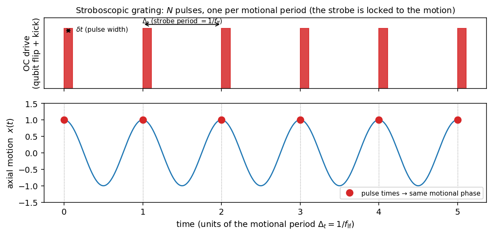

The stroboscopic phase grating as a phase-space probe — transfer function
Technical note, 2026-06-23 (rev. after review). Work in
progress — the population-transfer results (exact-strobe
transfer function, weak-pulse kernels, Ramsey identity, χ–Wigner
relations) are validated against the engine + tests; the coherence/SDF
sections are established identities / specifications for the
interferometric extension. Self-contained derivation of the measurement
transfer function of the Strobo2.0 "active phase grating" and its
relation to motional-state (Wigner) tomography. All population-transfer
formulas below are validated against spike/engines/strobo_sim.py;
the coherence/SDF relations are established transfer-function identities
that specify the required interferometric extension. See §9.
Plain-language overview (read me first)
The PAULA experiment traps a single ²⁵Mg⁺ ion and encodes a qubit (a two-level quantum system, written \(|\!\uparrow\rangle,|\!\downarrow\rangle\)) in two of its internal electronic states. The ion also vibrates in the trap; that vibration is a quantum harmonic oscillator ("the motion"), and its quantum state is what we want to characterise. The "active phase grating" is a laser sequence that flips the qubit with a train of short pulses while each pulse also gives the ion a tiny momentum kick (a photon recoil). Because the kick links the qubit to the motion, how often the qubit ends up flipped carries information about the motional state.
This note derives, exactly, which function of the motional state the flip signal measures (its "transfer function"), and shows that a two-pulse Ramsey version (a standard interferometer: two pulses with a controlled phase between them) reads the motional state's characteristic function directly — and hence, by a Fourier transform, its Wigner function, a picture of the state in position–momentum phase space — using qubit populations alone. It assumes MSc-level quantum mechanics (harmonic oscillator, Pauli spin, Fourier transforms); all other notation and jargon is defined just below.
Notation and terminology
Symbols (frequencies are ordinary/cyclic, in hertz; angular versions carry a \(2\pi\)).
| symbol | meaning |
|---|---|
| $ | !\uparrow\rangle, |
| \(\rho\) | the motional quantum state (density matrix of the vibration) |
| \(a,a^\dagger\) | lowering / raising (annihilation / creation) operators of the motional mode |
| \(\omega_{\rm lf}=2\pi f_{\rm lf}\) | angular / cyclic frequency of the low-frequency (lf) axial motional mode (\(f_{\rm lf}\!\approx\!1.30\) MHz) |
| \(\eta\) | Lamb–Dicke parameter — dimensionless recoil strength, \(\eta=k_{\rm eff}x_{\rm zpf}\) (zero-point motion in units of the optical wavelength); \(\eta\!\approx\!0.389\) here |
| \(\delta t\) | duration of one grating pulse |
| \(\Omega_{\rm strobo}\) | per-pulse Rabi frequency (spin-flip rate) of the grating drive (= \(\Omega_0\) in the AOM note) |
| \(\theta=2\pi\,\Omega_{\rm strobo}\,\delta t\) | pulse area — the spin-rotation angle of one pulse (\(\theta\ll1\) = "weak pulse") |
| \(\Delta_t\) | strobe period (time between pulses), set equal to the motional period \(1/f_{\rm lf}\) |
| \(N\) | number of pulses in the train |
| \(\Phi=\omega_{\rm lf}\Delta_t\) | motional phase the oscillator advances per pulse period |
| \(\phi_g\) | grating phase — the programmable optical phase of the drive |
| \(\delta\) | drive detuning — offset of the drive frequency from the qubit transition (Hz) |
| \(D(\alpha)=e^{\alpha a^\dagger-\alpha^* a}\) | displacement operator — shifts the motion by \(\alpha\) in phase space |
| \(\beta,\beta_k\) | the per-pulse phase-space kick (a displacement amplitude); \(\beta_k=i\eta e^{i(\phi_g-k\Phi)}\) |
| \(\alpha\) | complex phase-space coordinate (\(\mathrm{Re}\,\alpha\leftrightarrow\) position, \(\mathrm{Im}\,\alpha\leftrightarrow\) momentum, oscillator units) |
| \(\chi(\beta)=\mathrm{Tr}[\rho D(\beta)]\) | characteristic function — a complete description of \(\rho\); the Fourier transform of \(W\) |
| \(W(\alpha)\) | Wigner function — a quasi-probability map of \(\rho\) in phase space (2-D Fourier transform of \(\chi\)) |
| \(C,\,M\) | interferometer fringe contrast; number of experimental repetitions ("shots") |
| \(k_{\rm eff}\) | effective wavevector of the drive (sets the optical grating's spatial period; \(\approx\!31\) rad/µm here) |
Acronyms.
- OC — orthogonal-carrier: the two-photon stimulated-Raman laser drive arranged so the net photon-momentum kick \(\Delta\mathbf k\) lies along the trap (axial) direction, so a qubit flip is accompanied by an axial recoil. (lf = the low-frequency axial mode.)
- Strobo2.0 — the experimental pulse sequence / dataset this note models.
- SDF — spin-dependent force (a force whose direction depends on the qubit state).
- MS — Mølmer–Sørensen: a standard spin–motion entangling operation built from a two-tone ("bichromatic") spin-dependent force.
- RWA — rotating-wave approximation (dropping fast counter-rotating terms).
- QND — quantum non-demolition: a measurement that does not disturb the very quantity it measures (so it can be repeated).
- DFT / FFT — discrete / fast Fourier transform.
- PSF — point-spread function: the blurring kernel a finite, noisy reconstruction applies to the true image.
- AC-Stark shift — a light-induced shift of the qubit energy levels.
Concepts in one line.
- Phase space — the position–momentum plane of the oscillator, in dimensionless units \(\alpha\) where \(\langle x\rangle = 2x_{\rm zpf}\,\mathrm{Re}\,\alpha\) (so one unit of \(\alpha\) corresponds to a position displacement of about \(2x_{\rm zpf}\), with \(x_{\rm zpf}=\sqrt{\hbar/2m\omega_{\rm lf}}\) the zero-point spread).
- Coherent / Fock / thermal / cat states — standard motional states: a displaced ground state (most "classical"), a state of definite phonon number, a hot statistical mixture, and a superposition of two coherent states (a "Schrödinger-cat" state, with non-classical interference fringes and regions of negative \(W\)).
- Floquet — the framework for time-periodic (here, pulse-periodic) Hamiltonians.
- Projection noise — the irreducible statistical noise of a yes/no (two-level) quantum measurement; it averages down as \(1/\sqrt M\).
- Dirichlet / Fejér kernel — the diffraction-grating lineshapes produced by summing \(N\) equally spaced phases (a sharp comb of peaks).
0. Summary
In the weak-pulse limit a bare stroboscopic carrier grating produces a spin-flip amplitude that is a coherent sum of motional displacement operators, \(A=-i\frac{\theta}{2}\sum_k e^{-i2\pi k\delta\Delta_t}D(\beta_k)\). The qubit observable then decides which functional of the Wigner characteristic function \(\chi(\beta)=\mathrm{Tr}[\rho\,D(\beta)]\) you measure:
| scheme | measured object | accessible \(\beta\)-set | tomography status |
|---|---|---|---|
| bare grating, population \(\langle A^\dagger A\rangle\) | quadratic double-sum kernel \(\sum_{k,k'}\!\dots\chi(\beta_{k'}\!-\!\beta_k)\) | chord differences of ring points | diagnostic kernel; not direct tomography; motion-blind on the exact strobe |
| bare grating, coherence \(\propto\mathrm{Tr}[\rho A]\) | single-sum DFT of \(\chi\) | weighted samples on the ring \(\lvert\beta\rvert=\eta\) | incomplete (thin ring) unless extra control changes the radius |
| spin-dependent force / bichromatic | \(\chi(\beta_{\rm tot})\) directly | 2-D region via controlled displacement | direct characteristic-function tomography |
| Ramsey two-pulse (ref + grating \(\pi/2\), §6) | population \(P_\downarrow(\varphi)\), linear in \(\chi(\Delta\beta)\) | disk \(\lvert\Delta\beta\rvert\le2\eta\) | direct χ-interferometry; finite-radius reconstruction |
The carrier grating is a phase-space-sensitive filter and calibration primitive. A phase-coherent recoil-dressed Ramsey pair (§6) turns it into a direct characteristic-function interferometer using population readout only — no MS/SDF interaction needed for directness. What remains limited is the phase-space range: the two-pulse reach is \(\lvert\Delta\beta\rvert\le2\eta\), so complete high-resolution Wigner reconstruction requires either a sufficiently large recoil, an explicit band-limit/prior, or an extension that increases the controllable relative displacement (concatenated Ramsey blocks or an SDF/bichromatic sequence).
Units. Throughout, \(\delta\) and \(f_{\rm lf}\) are ordinary (cyclic) frequencies in Hz, \(\Delta_t\) in s, and the per-cycle qubit phase is \(e^{-i2\pi k\delta\Delta_t}\). Comb teeth then sit at \(\delta=m/\Delta_t=m f_{\rm lf}\).
1. Setup and assumptions
- Qubit \(\{|\!\uparrow\rangle,|\!\downarrow\rangle\}\), one motional mode \(\omega_{\rm lf}=2\pi f_{\rm lf}\), \(a,a^\dagger\), Lamb–Dicke parameter \(\eta\).
- \(N\) identical OC (orthogonal-carrier; see Notation) pulses, one per strobe period \(\Delta_t\), each of area \(\theta=\Omega_{\rm strobo}\,\delta t\). Weak-pulse limit \(\theta\ll1\) and short pulse \(\omega_{\rm lf}\delta t\ll1\). (The short-pulse condition is the marginal one in practice — the AOM floors the delivered pulse at \(\sim150\) ns, \(\omega_{\rm lf}w_{\rm eff}\approx1.2\) rad; the pulse area \(\theta\) is nonetheless preserved. See §8.)
- One impulsive recoil-dressed pulse, retaining the
full harmonic-oscillator displacement operator \(D(i\eta)\) (not its Lamb–Dicke expansion
\(1+i\eta(a+a^\dagger)+\dots\)),
written so the \(|\!\uparrow\rangle\!\to\!|\!\downarrow\rangle\)
transition direction is explicit (matching
strobo_sim, where the \(|\!\downarrow\rangle\langle\uparrow|\) block carries \(D(i\eta)\)): \[U_{\rm pulse}=\exp\!\big[-i\tfrac{\theta}{2}\big(\sigma_-\!\otimes\!D(i\eta)+\sigma_+\!\otimes\!D(i\eta)^\dagger\big)\big],\qquad D(\alpha)=e^{\alpha a^\dagger-\alpha^* a}.\] The flip \(|\!\uparrow\rangle\!\to\!|\!\downarrow\rangle\) is generated by \(\sigma_-\!\otimes\!D(i\eta)\), i.e. the kick is \(D(+i\eta)\). This expression assumes the two-level and optical rotating-wave approximations and neglects motional evolution during the pulse; it is nonperturbative in \(\eta\) (the weak-pulse limit \(\theta\ll1\) above is a separate assumption, used only for the leading-order expansions of §2–3). - A grating phase \(\phi_g\) rotates the kick, \(D(i\eta)\to D(i\eta e^{i\phi_g})\); a drive detuning \(\delta\) (Hz) gives the qubit phase \(e^{-i2\pi k\delta\Delta_t}\). Start in \(|\!\uparrow\rangle\otimes\rho\).
In the interaction picture w.r.t. \(H_0=\omega_{\rm lf}a^\dagger a\), the kick at cycle \(k\) (\(t_k=k\Delta_t\)) is rotated, \(D(\alpha)\to D(\alpha e^{-i\omega_{\rm lf}t_k})\). With the per-cycle phase slip \(\Phi=\omega_{\rm lf}\Delta_t=2\pi f_{\rm lf}\Delta_t\),
\[\boxed{\;\beta_k=i\eta\,e^{\,i(\phi_g-k\Phi)}\;}\]
On the exact strobe \(f_{\rm lf}\Delta_t=1\) (\(\Phi=2\pi\)) every \(\beta_k=i\eta e^{i\phi_g}\) (the kick points the same way each cycle). Off the strobe the \(\beta_k\) lie on the circle \(\lvert\beta\rvert=\eta\), stepped by the fixed angular increment \(\Phi\).

Figure 1 — the stroboscopic grating. Top: the \(N\) OC drive pulses (each \(\delta t\) wide, spaced by the strobe
period \(\Delta_t\)). Bottom: the axial
motion; the pulses land at the same motional phase each period (the
strobe is locked to the motion). Generated by make_grating_schematics.py.
2. The accumulated flip amplitude
To first order in \(\theta\) the qubit picks up at most one flip, summed coherently:
\[A=-\,i\,\frac{\theta}{2}\sum_{k=0}^{N-1} e^{-i2\pi k\delta\Delta_t}\,D(\beta_k)\qquad(\text{operator on the motion}).\]
This one operator generates both observables below.
3. Two observables
(a) Spin-flip probability \(P_\downarrow=\langle A^\dagger A\rangle\). With the Weyl identity \(D(\mu)^\dagger D(\nu)=D(\nu-\mu)e^{i\,\mathrm{Im}(\nu\mu^*)}\) and \(\langle D(\beta)\rangle=\chi(\beta)\),
\[\boxed{\;P_\downarrow(\delta,\phi_g)=\Big(\tfrac{\theta}{2}\Big)^2 \sum_{k,k'=0}^{N-1} e^{\,i2\pi(k-k')\delta\Delta_t}\,e^{\,i\,\mathrm{Im}(\beta_{k'}\beta_k^*)}\,\chi(\beta_{k'}-\beta_k)\;}\]
A real quadratic double sum with coherent cross terms between flips on different cycles (\(k\neq k'\)), sampling \(\chi\) at the kick differences \(\beta_{k'}-\beta_k\) — chords of the \(\lvert\beta\rvert=\eta\) ring. (The summand is written in the \(k\!\leftrightarrow\!k'\)-relabelled form that matches the engine; the direct \(A^\dagger A\) expansion gives the complex-conjugate summand \(e^{i2\pi(k'-k)\delta\Delta_t}e^{i\,\mathrm{Im}(\beta_k\beta_{k'}^*)}\chi(\beta_k-\beta_{k'})\), identical after relabelling since the total sum is real.)
(b) Spin coherence. \(\langle A\rangle\) is not by itself the qubit coherence — that requires an interferometric sequence. Prepare a superposition, route the grating so the two spin branches acquire a relative kick, interfere with a reference arm, and apply an analysis \(\pi/2\) pulse of phase \(\varphi\). To leading order the off-diagonal qubit element is \(\rho_{\uparrow\downarrow}\propto\mathrm{Tr}[\rho A]\), so
\[\langle\sigma_x\rangle=2\,\mathrm{Re}\big[C_{\rm ref}\,\mathrm{Tr}[\rho A]\big]+O(\theta^2),\qquad \langle\sigma_y\rangle=-2\,\mathrm{Im}\big[C_{\rm ref}\,\mathrm{Tr}[\rho A]\big]+O(\theta^2),\]
where \(C_{\rm ref}\) is a complex coefficient fixed by the preparation, reference pathway, and analysis-pulse phase (these are the ideal-limit relations; \(C_{\rm ref}=1\) only after calibration/normalisation — do not silently drop it), with
\[\boxed{\;\mathrm{Tr}[\rho A]=-\,i\,\frac{\theta}{2}\sum_{k=0}^{N-1} e^{-i2\pi k\delta\Delta_t}\,\chi(\beta_k)\;}\]
a single sum — a discrete Fourier transform of \(\chi\) over the sampled ring. Note \(\langle A^\dagger A\rangle\neq|\langle A\rangle|^2\) (operator variance): that is exactly why the two channels behave differently on the strobe. This coherence channel is the reconstruction scheme the grating enables, not what the present displ=0 dataset provides — that data is spin-flip probability vs \(\delta t\); the coherence route needs an added MW reference/analysis pulse. The modern trapped-ion realisation of this characteristic-function route (bichromatic state-dependent displacements mapping \(\mathrm{Re}\,\chi,\mathrm{Im}\,\chi\) onto spin readout) is Flühmann & Home (2020). This weak, interferometrically-referenced coherence channel must not be conflated with the deterministic SDF protocol of §5: it accesses the same characteristic-function object only on the carrier-grating sampling ring \(\lvert\beta\rvert=\eta\), whereas the SDF/bichromatic conditional displacement scans \(\chi(\beta)\) over a controllable 2-D region.
4. Exact strobe — the comb, and the exact \(\eta=0\) transfer function
With \(\Phi=2\pi\) all \(\beta_k=i\eta e^{i\phi_g}\), so \(\beta_{k'}-\beta_k=0\) and the probability collapses to a state-independent comb:
\[P_\downarrow(\delta)=\Big(\tfrac{\theta}{2}\Big)^2\Big|\,\underbrace{\textstyle\sum_{k}e^{-i2\pi k\delta\Delta_t}}_{S_N(\delta)}\Big|^2 =\Big(\tfrac{\theta}{2}\Big)^2\left|\frac{\sin(\pi N\delta\Delta_t)}{\sin(\pi\delta\Delta_t)}\right|^2 .\]
The amplitude \(S_N\) is the finite Dirichlet kernel; the probability is the squared Dirichlet kernel (the Fejér kernel up to the \(1/N\) normalisation). It is independent of \(\eta\) and of \(\rho\) — \(P_\downarrow\) is motion-blind on resonance (teeth at \(\delta=m f_{\rm lf}\), width \(\sim1/(N\Delta_t)\)). The coherence does not collapse: \(\mathrm{Tr}[\rho A]=-i\frac{\theta}{2}\chi(i\eta e^{i\phi_g})S_N(\delta)\) still reads \(\chi\) at one point, so the motion is invisible to \(P_\downarrow\) but visible to the coherence even on resonance.
Exact, all-orders in \(\theta\) — the exact-strobe transfer function. The weak-pulse comb is only a small-signal limit; the actual operating point is \(N\theta\approx\pi\). Derived first in the \(\eta=0\) gauge (the grating is then a periodically kicked two-level system), the closed form is
\[\boxed{\;P_\downarrow^{\rm strobe}(\delta)=\frac{\sin^2(\theta/2)}{\sin^2\lambda}\,\sin^2(N\lambda),\qquad \cos\lambda=\cos(\theta/2)\cos(\pi\delta\Delta_t)\;}\]
(at \(\delta=0\) this is \(\sin^2(N\theta/2)\), the on-resonance
flop). Here \(\lambda\) is the
half-angle of the single-cycle Floquet rotation that
strobo_sim implements, \(U_{\rm
cycle}=U_{\rm free}R_x(\theta)\) with \(R_x(\theta)=e^{-i\theta\sigma_x/2}\) and
\(U_{\rm
free}=\mathrm{diag}(e^{+i\pi\delta\Delta_t},e^{-i\pi\delta\Delta_t})\),
so \(\cos\lambda=\tfrac12\mathrm{Tr}\,U_{\rm
cycle}=\cos(\theta/2)\cos(\pi\delta\Delta_t)\) (the flip
population \(P_\downarrow\) is
invariant under a common \(z\)-rotation
of the cycle — \(U'=R_z^{-1}U R_z\)
only phases the \(z\)-eigenstates \(|\!\uparrow\rangle,|\!\downarrow\rangle\) —
so the intra-cycle ordering of \(U_{\rm
free}\) and \(R_x\) is
immaterial for \(P_\downarrow\)). It
matches strobo_sim to machine precision (§9) and reduces to
the squared-Dirichlet comb for \(\theta\ll1\).
Although derived in the \(\eta=0\) gauge, \(P_\downarrow^{\rm strobe}\) is the exact population transfer on the exact motional strobe for arbitrary \(\eta\) and arbitrary \(\rho\), to all orders in \(\theta\) — so "motion-blind on resonance" is not a weak-pulse artefact. On the exact motional strobe the motional part of the free evolution is the identity each cycle (the qubit detuning phase \(U_{\rm free}=e^{i\pi\delta\Delta_t\sigma_z}\otimes\mathbb 1\) is not identity for \(\delta\neq0\)). The spin-dependent-displacement gauge \(W=|\!\uparrow\rangle\langle\uparrow|\otimes\mathbb 1+|\!\downarrow\rangle\langle\downarrow|\otimes D(i\eta)\) therefore removes the recoil dressing (\(W^\dagger U_{\rm pulse}W=e^{-i\theta\sigma_x/2}\otimes\mathbb 1\)) and commutes with \(U_{\rm free}\), leaving a pure two-level Floquet problem — the qubit detuning phase plus the bare spin rotation — whose flip probability is the boxed result independent of \(\eta,\rho\) (verified vs the full Floquet propagator at \(\theta\) up to the \(\pi\)-pulse, \(\eta=0\) and \(0.389\) — §9). For \(\eta\neq0\) off the strobe, the weak-pulse expansion (§3) remains the best closed-form handle.
5. Off-strobe / phase-varying grating — sampling \(\chi(\beta)\)
Off the exact strobe the \(\beta_k\) step around the ring and both channels can become motion-sensitive (a rotationally symmetric state or a special detuning may still suppress the observable variation):
- Coherence: \(\mathrm{Tr}[\rho A]=-i\frac{\theta}{2}\sum_k e^{-i2\pi k\delta\Delta_t}\chi(i\eta e^{i(\phi_g-k\Phi)})\) — a DFT of \(\chi\) over the ring; \(\phi_g\) rotates the ring, \(\delta\) supplies the Fourier phase.
- Probability: the §3(a) double sum; its \(\eta\)- and state-dependence enters through the off-diagonal \(k\neq k'\) terms. On the exact strobe these terms remain present but reduce to \(\chi(0)=1\), so their motional dependence vanishes. Off-strobe this is the \(\sim13\%\) leading-order variation of \(P_\downarrow\) with \(\eta\) at a 3% strobe mistune (§9).
Reach (the architecture break). For the bare grating, \(\phi_g\) rotates a fixed-radius ring, \(\delta\) re-weights the same sampled points, and \(N\) changes the number and angular coverage of points — none alone increases \(\lvert\beta\rvert\) beyond \(\eta\). Resolving finer phase-space structure requires the per-branch kicks to add coherently, i.e. a spin-dependent displacement (an MS — Mølmer–Sørensen — / SDF / two-tone "bichromatic" sideband interaction). With the symmetric convention
\[U_{\rm SDF}=|\!\uparrow\rangle\langle\uparrow|\otimes D(+\beta/2)+|\!\downarrow\rangle\langle\downarrow|\otimes D(-\beta/2),\]
an initial qubit superposition gives, exactly (with \(\sigma_+=|\!\uparrow\rangle\langle\downarrow|\); verified numerically), \[\langle\sigma_+\rangle_{\rm out}=\tfrac12\,\mathrm{Tr}[\rho\,D(-\beta)]=\tfrac12\chi(-\beta)=\tfrac12\chi(\beta)^*,\] so the two readout quadratures return \(\mathrm{Re}\,\chi(\beta)\) and \(-\mathrm{Im}\,\chi(\beta)\). The sign is convention-dependent: swapping the two branch displacements (or the \(\sigma_+\) assignment) conjugates \(\beta\), and writing the branches as \(D(\pm\beta)\) instead of \(D(\pm\beta/2)\) would give \(\chi(\mp2\beta)\) — fix the convention against the actual pulse phases before use. Here \(\beta\) is the relative displacement between the two branches. Rastering \(\phi_g\) (direction) and \(\lvert\beta\rvert\) (magnitude, grown to \(\sim N\eta\) by applying the SDF over \(N\) cycles) maps \(\chi\) over a 2-D region — direct characteristic-function tomography.
6. Ramsey characteristic-function interferometer (population-only)
The cleanest near-term tomography route turns the bare grating into a direct \(\chi\) interferometer using two recoil-dressed \(\pi/2\) pulses and population readout — no weak-amplitude/coherence measurement.

Figure 2 — the Ramsey interferometer. Left: a reference \(\pi/2\) pulse (displacement \(\beta_r\)) then a phase-coherent grating \(\pi/2\) (\(\beta_g\), relative phase \(\varphi\)), then a qubit-population measurement. Right: each pulse kicks the motion to a point on the ring \(\lvert\beta\rvert=\eta\); their difference \(\Delta\beta=\beta_g-\beta_r\) — the displacement the experiment actually reads — fills the disk \(\lvert\Delta\beta\rvert\le2\eta\).
Design criterion (load-bearing). For a multipulse grating to implement a single effective recoil-dressed rotation \(U_{\beta_g}\), every constituent pulse must share both the same motional displacement \(\beta_k=\beta_g\) and the same dressed spin phase. Exact motional strobing (\(f_{\rm lf}\Delta_t=1\)) guarantees the first. But the qubit detuning still advances the spin phase by \(-2\pi k\delta\Delta_t\) per cycle, so the generators are \(X_{\beta_g}^{(\phi_k)}\) with \(\phi_k=\phi_0-2\pi k\delta\Delta_t\) — and these generically do not commute for \(\phi_k\neq\phi_\ell\) (verified: \(\lVert[X^{(\phi_k)},X^{(\phi_\ell)}]\rVert\) runs from \(0\) at \(\Delta\phi=0\) to \(2\) at \(\Delta\phi=\pi/2\); the lone exception \(\Delta\phi\equiv0\bmod\pi\) has \(X^{(\phi+\pi)}=-X^{(\phi)}\), which commutes but reverses the rotation sign — a negative-area pulse, not the target \(\pi/2\)). The operational requirement is therefore equal spin phase mod \(2\pi\), met by either \(\delta\Delta_t\in\mathbb Z\) (the grating drive sits on a comb tooth) or cycle-by-cycle phase programming \(\phi_{{\rm drive},k}=\phi_{\rm target}+2\pi k\delta\Delta_t\) that cancels the accumulated detuning phase. Only then do all generators coincide, so a calibrated total area \(\sum_k\theta_k=\pi/2\) implements \(U_{\beta_g}\).
Define the recoil-dressed flip and its \(\pi/2\):
\[X_\beta=\sigma_-D(\beta)+\sigma_+D(\beta)^\dagger,\quad X_\beta^2=\mathbb 1,\qquad U_\beta=e^{-i\frac{\pi}{4}X_\beta}=\tfrac{1}{\sqrt2}(\mathbb 1-iX_\beta).\]
A reference pulse of displacement \(\beta_r\) then a phase-coherent grating \(\pi/2\) with displacement \(\beta_g\) and relative phase \(\varphi\), \(X_{\beta_g}^{(\varphi)}=e^{i\varphi} \sigma_-D(\beta_g)+e^{-i\varphi}\sigma_+D(\beta_g)^\dagger\). Starting in \(|\!\uparrow\rangle\otimes\rho\), applying \(U_{\beta_g}^{(\varphi)}U_{\beta_r}\) and measuring \(P_\downarrow\) gives, exactly (verified vs an exact two-pulse spin⊗Fock simulation to \(\lesssim10^{-15}\), §9):
\[\boxed{\;P_\downarrow(\varphi)=\tfrac12\Big[1+\mathrm{Re}\!\big(e^{i[\varphi+\mathrm{Im}(\beta_g\beta_r^*)]}\,\chi(\beta_g-\beta_r)\big)\Big]\;}\]
So \(P_\downarrow(0)-\tfrac12\propto\mathrm{Re}\,\chi(\Delta\beta)\) and \(\varphi\to\varphi+\pi/2\) gives the imaginary quadrature: two phase settings recover the two quadratures of \(\chi(\Delta\beta)\) (\(\Delta\beta=\beta_g-\beta_r\)), after calibrating the known Weyl geometric phase \(e^{i\,\mathrm{Im}(\beta_g\beta_r^*)}\), the fringe contrast, and readout offsets (ideal-limit values; pulse-area imbalance enters likewise). This is linear in \(\chi\) — qualitatively unlike the bare grating's quadratic double-sum \(\langle A^\dagger A\rangle\) (§3a).
Phase-space reach. With fixed recoil \(\lvert\beta\rvert=\eta\) and independently programmable pulse phases, \(\beta_{r}=i\eta e^{i\phi_r}\), \(\beta_g=i\eta e^{i\phi_g}\),
\[\Delta\beta=i\eta\big(e^{i\phi_g}-e^{i\phi_r}\big)\quad\Rightarrow\quad \lvert\Delta\beta\rvert\le2\eta,\]
a genuine 2-D disk (not the §5 thin ring) — verified to fill exactly to \(2\eta\). A constructive parameterisation: writing \(\phi_g=a+s\), \(\phi_r=a-s\) gives \(\Delta\beta=-2\eta\,e^{ia}\sin s\), so for a target \(\Delta\beta=r\,e^{i\vartheta}\) (\(0\le r\le2\eta\)) take \(s=\arcsin(r/2\eta)\), \(a=\vartheta+\pi\), i.e. \[\phi_{g,r}=\vartheta+\pi\pm\arcsin\!\big(r/2\eta\big)\quad\Rightarrow\quad\Delta\beta=r\,e^{i\vartheta}\ \text{(exactly; verified).}\] The identity is exact in \(\eta\): retaining the full recoil operator \(D(i\eta)\) is not a Lamb–Dicke expansion but the full operator within the two-level, optical-RWA, impulsive model, so the Ramsey relation holds for any \(\eta\).
Limitations. (i) The grating must realise a single effective \(X_{\beta_g}\) \(\pi/2\) — which (per the design criterion above) needs the drive on a comb tooth \(\delta\Delta_t\in\mathbb Z\) or cycle-by-cycle phase programming; otherwise the per-cycle spin-phase slip makes it a noncommuting multipath sequence, not one \(X_{\beta_g}\). (ii) The threat is finite pulse duration, not large \(\eta\): the requirement is impulsive control \(\omega_{\rm lf}\delta t\ll1\) and a calibrated \(\pi/2\) area, so free motion during a pulse does not spoil the common, state-independent dressed rotation. This impulsive floor is set by the AOM, not the gate: the delivered pulse can't be shorter than \(w_{\rm eff}\approx150\) ns (\(\omega_{\rm lf}w_{\rm eff}\approx1.2\) rad), giving an irreducible \(\sim11\%\) recoil reduction and a shrunk disk \(2\eta_{\rm eff}\approx0.69\) — see §8. (iii) The disk is finite (\(2\eta\); \(\eta=0.389\Rightarrow0.78\)) — high resolution / larger states still want bigger engineered \(\lvert\Delta\beta\rvert\) (concatenated Ramsey blocks or an SDF sequence). Suggested first experiment: demonstrate the two-pulse identity for vacuum / coherent / thermal, then test that grating-phase control fills the predicted \(\lvert\Delta\beta\rvert\le2\eta\) disk.
7. From \(\chi\) to the Wigner function
\(\chi\) and \(W\) are a 2-D Fourier pair,
\[\chi(\beta)=\int d^2\alpha\,W(\alpha)\,e^{\beta\alpha^*-\beta^*\alpha},\qquad W(\alpha)=\frac{1}{\pi^2}\int d^2\beta\,\chi(\beta)\,e^{\alpha\beta^*-\alpha^*\beta}.\]
Three reconstruction routes:
- Characteristic-function tomography — sample \(\chi(\beta)\) (SDF/coherence) and 2-D FFT \(\to W\). Direct route (Banaszek–Wódkiewicz / Flühmann–Home family).
- Quadrature / inverse Radon — by the Fourier-slice theorem a radial slice \(\chi(se^{i\phi})\) is the 1-D FT of the marginal \(\mathrm{pr}(x_\phi)\); 1-D-invert to marginals, filtered back-projection \(\to W\) (Vogel–Risken). The population kernel of §3(a) is not a Radon projection of \(W\) — it is a quadratic functional of \(\chi\) sampled on displacement differences. A Radon relation arises only for a distinct quadrature-measurement protocol (full marginals); the small-\(\eta\) expansion of §3(a) gives moments/derivatives near \(\chi(0)\), not a quadrature marginal.
- Displaced parity (no transform) — \(\langle\Pi(\beta)\rangle=\tfrac{\pi}{2}W(\beta)\) gives \(W\) directly if the readout maps onto motional parity (a full sideband \(\pi\) map) rather than the coherence (Leibfried; Lutterbach–Davidovich).
8. Finite-pulse and non-ideal corrections
These are leading-order patches, not a universal substitution:
- Two-level (η→0) detuned pulse: a finite rectangular pulse of detuning \(\delta_{\rm AC}\) replaces the area by \(\frac{\theta}{2}\to\frac{\Omega_{\rm strobo}}{\Omega_{\rm eff}}\sin(\Omega_{\rm eff}\delta t/2)\), \(\Omega_{\rm eff}=\sqrt{\Omega_{\rm strobo}^2+\delta_{\rm AC}^2}\) — valid for the bare Rabi pulse, not for the displacement-dressed operator in general.
- Motion during the pulse: at leading order in \(\theta\) and \(\eta\) a rectangular pulse averages the motional phase over its duration, giving a factor \(\mathrm{sinc}(\omega_{\rm lf}\delta t/2)\) (which smears the effective \(\eta\); \(\omega_{\rm lf}\delta t\approx0.16\) rad at \(\delta t=0.02\,\mu\)s) plus a midpoint phase shift. Beyond this order the time-ordered pulse propagator must be evaluated directly — it is not equivalent to a global rescaling of \(\eta\).
- Finite \(N\) / decoherence cap \(\lvert\beta\rvert_{\max}\); the reconstructed \(W\) then carries a resolution that scales as \(\sim1/\lvert\beta\rvert_{\max}\) (the actual point-spread depends on the sampling mask, weighting, and reconstruction regularisation) — so the noise/filter-function analysis sets the tomographic resolution.
AOM finite acoustic transit — the real impulsive
floor (cross-reference). The "motion during the pulse" bullet
above uses the electronic gate \(\delta
t\) (\(\omega_{\rm lf}\delta
t\approx0.16\) rad at 20 ns). But the pulse the ion sees
is not \(\delta t\) wide: the
single-pass Raman AOM (finite speed of sound) rounds and
lengthens it to an effective width that
saturates at \(w_{\rm
eff}\approx\sqrt{\pi}\,\tau_f\approx150\) ns (\(\tau_f=D/2V\approx84\) ns) — a hard floor
independent of the gate. See the companion note aom_finite_sound_velocity_rabi.md.
Impact on this note:
- The pulse area \(\theta=\Omega_{\rm strobo}\delta t\) is preserved (only R2 is switched, single-pass: the slow turn-on is exactly cancelled by the turn-off tail). So everything area-based survives unchanged — the comb positions, the exact-strobe transfer function (§4), the calibrated \(\pi/2\) (§6), and the \(\chi\!\to\!W\) relations (§7). The AOM does not undermine the core results.
- The impulsive assumption is far more marginal than \(\omega_{\rm lf}\delta t\) suggests — and floored. The true smearing angle is \(\omega_{\rm lf}w_{\rm eff}\approx1.2\) rad. Averaging the recoil over the delivered pulse multiplies the effective Lamb–Dicke kick by the single-pulse spectrum at the motional frequency, \[\frac{\eta_{\rm eff}}{\eta}=\mathrm{sinc}(\pi f_{\rm lf}\delta t)\,\underbrace{e^{-\pi^2\tau_f^2 f_{\rm lf}^2}}_{\text{AOM, irreducible}}\;\xrightarrow[\delta t\to0]{}\;e^{-\pi^2\tau_f^2 f_{\rm lf}^2}\approx0.89,\] an irreducible ~11 % recoil reduction set by the beam size \(\tau_f\), not the gate — the same Gaussian roll-off as the detuning-comb envelope (AOM note §5b), here evaluated at \(f_{\rm lf}\). The §6 disk shrinks, \(2\eta_{\rm eff}\approx0.69\) (vs 0.78). To approach the truly impulsive regime, shrink the AOM beam (\(\tau_f\propto D\)), not the gate.
- DAQ 10 ns timing. The calibrated total area \(\sum_k\theta_k=\pi/2\) (§6) is set on a 10 ns grid → rotation quantum \(N\Omega_0\delta t_{\min}\approx0.53\pi\) at \(N=50\), so precise \(\pi/2\) setting favours fewer pulses or trimming \(\Omega_0\) (AOM note §5c).
9. Numerical validation
Parameters unless stated: \(f_{\rm
lf}\Delta_t\) as noted, \(\Delta_t=0.769172\,\mu\)s, \(\Omega_{\rm strobo}/2\pi=4.99\times10^5\)
Hz, \(N=50\), \(\bar n=0\) (motion in \(|0\rangle\), \(\chi(\beta)=e^{-|\beta|^2/2}\)). Error
metric = \(|P_{\rm analytic}-P_{\rm
Floquet}|/P_{\rm Floquet}\) against
strobo_detuning_scan (the full Floquet propagator).
Exact-strobe formula \(P_\downarrow^{\rm strobe}\) (§4): matches the Floquet simulation to machine precision (\(\lesssim10^{-13}\)) at \(\delta t=0.02\) and \(0.05\,\mu\)s, on and off resonance — and (the all-orders gauge result) equals the full-Floquet exact-strobe population for \(\eta=0.389\) as well, at \(\theta\) up to the \(\pi\)-pulse and several \(\delta\).
Multipulse design criterion (§6): the dressed generators \(X^{(\phi_k)}\) commute iff the spin phases coincide mod \(\pi\) — \(\lVert[X^{(\phi_k)},X^{(\phi_\ell)}]\rVert=0\) at \(\Delta\phi=0\), rising to \(2\) at \(\Delta\phi=\pi/2\), back to \(0\) at \(\Delta\phi=\pi\) (where \(X^{(\phi+\pi)}=-X^{(\phi)}\), a sign flip). So a clean positive-area single \(X_{\beta_g}\) needs equal phase mod \(2\pi\) (\(\delta\Delta_t\in\mathbb Z\) or phase programming).
Weak-pulse double-sum kernel (§3a), off-strobe (\(f_{\rm lf}\Delta_t=1.03\), \(\eta=0.389\), \(\delta=0\)) — a small-signal expansion; the observed relative error scales as \(\theta^2\) away from kernel zeros (the amplitude correction is \(O(\theta^3)\); near zeros the relative metric is ill-conditioned):
\(\delta t\) (\(\mu\)s) \(\theta\) \(P_\downarrow\) rel. err. 0.001 0.0031 0.0053 0.18 % 0.002 0.0063 0.0211 0.73 % 0.005 0.0157 0.127 4.7 % 0.010 0.0314 0.442 20 % i.e. §3(a) is quantitative only for \(\theta\lesssim10^{-2}\) (\(P_\downarrow\ll1\)); it is not a model of the high-contrast \(N\theta\approx\pi\) data (use §4 / the full Floquet there).
Motion-blindness: on the exact strobe \(P_\downarrow\) is \(\eta\)-independent; a 3% strobe mistune makes the fractional change of \(P_\downarrow\) over \(\eta\), \([P(\eta{=}0)-P(\eta{=}0.389)]/P(\eta{=}0)=13.4\%\) (weak pulse, leading order — not saturation).
Heterodyne (§4):
strobo_population_vs_cyclesnutates with half-beat \(1/(2f_{\rm IF}\Delta_t)\) — \(f_{\rm IF}=50/100/200\) kHz \(\to\) 13/7/3 cycles.Ramsey identity (§6): the boxed \(P_\downarrow(\varphi)\) matches an exact two-pulse spin⊗Fock simulation to \(\lesssim10^{-15}\) (vacuum / coherent / Fock, random \(\beta_r,\beta_g,\varphi\)); \(\chi(\Delta\beta)\) recovered from \(P(0),P(\pi/2)\) to \(\sim10^{-16}\); the accessible set fills the disk to \(\max\lvert\Delta\beta\rvert=2\eta\).
These are implemented and tested in spike/engines/grating_tomography.py
(spike/test_grating_tomography.py) and walked through in
the tutorial notebook docs/notebooks/strobo_grating_tomography.ipynb.
10. Sensing metrics and measurement back-action
The same construction fixes the kinematic structure of the grating as a sensor — its bandwidth, dynamic range, sensitivity — and the nature of its disturbance. (These are ideal scalings; the realised numbers fold in contrast, noise, decoherence, heating, and readout.)
Phase = spatial registration; detuning = grating velocity. The drive phase seen by the ion is \(\Phi_L(x,t)=k_{\rm eff}x-\omega_d t+\phi_{\rm drive}\). A programmed phase step translates the interaction grating in space, \(\Delta x_{\rm grating}=-\Delta\phi/k_{\rm eff}\), so the relative phase between the reference and grating \(\pi/2\) pulses sets their spatial registration. An effective detuning \(\delta_{\rm eff}\) — the programmed drive offset plus any qubit, AC-Stark, Zeeman, and Doppler shifts — makes the grating move, \(\phi(t)=\phi_0-2\pi\delta_{\rm eff}t\), i.e. \(v_{\rm grating}=2\pi\delta_{\rm eff}/k_{\rm eff}\); an ion of velocity \(v\) sees \(\dot\Phi_L=k_{\rm eff}v-2\pi\delta_{\rm eff}\), so Doppler matching \(k_{\rm eff}v=2\pi\delta_{\rm eff}\) is equality of ion and grating velocity:
\[\boxed{\ \text{phase = spatial registration;}\quad\text{detuning = grating velocity;}\quad\text{Doppler shift = relative velocity.}\ }\]
Scope. This literal space–velocity picture applies to a travelling-wave / Raman interaction with non-negligible effective wavevector \(k_{\rm eff}\) (as for the OC Raman drive, \(\Delta k\,\|\,z\)); for a near-uniform microwave field \(k_{\rm eff}\to0\) it does not apply literally — though \(\phi_{\rm drive}\) and \(\delta\) always remain the controllable phase origin and phase rate of the dressed interaction. And for a harmonically trapped ion the "velocity" is not a stationary parameter but a rotating momentum quadrature selected by the pulse timing: on the exact motional strobe the oscillator returns to the same phase-space orientation each cycle, so any residual pulse-to-pulse slip is a drive-detuning effect — exactly the \(\phi_{{\rm drive},k}=\phi_{\rm target}+2\pi k\delta\Delta_t\) that the §6 design criterion must program. Exact strobing fixes the displacement direction; phase programming fixes the dressed spin-rotation axis.
Kinematic figures of merit. Distinguish two times: the coherent \(N\)-pulse grating duration \(T_g=N\Delta_t\) (which sets the comb linewidth) and the two-arm Ramsey reference-to-analysis separation \(T_R\) (which sets the Ramsey phase sensitivity). They coincide only when the grating arm itself defines the Ramsey interrogation interval.
- Comb resolution \(\Delta\delta_{\rm res}\sim1/T_g\) — the same \(1/(N\Delta_t)=26\) kHz comb-tooth width of §4; in velocity, \(\Delta v_{\rm res}\sim2\pi/(k_{\rm eff}T_g)\).
- Update bandwidth \(B\lesssim1/T_{\rm cycle}\) (the usual resolution/bandwidth trade-off).
- Unaliased range \(\lvert\delta\rvert\lesssim1/(2\Delta_t)=650\) kHz — half the comb spacing \(f_{\rm lf}/2\); in velocity \(\lvert v\rvert\lesssim\pi/(k_{\rm eff}\Delta_t)\) (a grating slipping \(>\!\tfrac12\) cycle per sample cannot be tracked unambiguously). This is an estimator/sampling (Nyquist) range for inferring the cycle-to-cycle detuning phase from stroboscopic samples — distinct from the full driven-system response envelope (set by the pulse duration, Rabi frequency, and Floquet structure).
- Phase-space baseline \(\lvert\Delta\beta\rvert\le2\eta\) (§6) → reconstruction scale \(\Delta\alpha_{\rm res}\sim1/\lvert\Delta\beta\rvert_{\max}\gtrsim1/2\eta\) (the §8 PSF).
- Projection-noise sensitivity at \(P_\downarrow=\tfrac12[1+C\cos\Phi_{\rm sig}]\): \(\Delta\Phi_{\rm sig}\sim1/(C\sqrt M)\) for \(M\) shots and contrast \(C\). For a calibrated signal phase \(\Phi_{\rm sig}=k_{\rm eff}x\) or \(k_{\rm eff}vT_R\) this gives the equivalent displacement / velocity sensitivities \(\Delta x\sim1/(k_{\rm eff}C\sqrt M)\), \(\Delta v\sim1/(k_{\rm eff}T_R C\sqrt M)\), and \(\Delta\delta\sim1/(2\pi T_R C\sqrt M)\) for a detuning signal (using the Ramsey separation \(T_R\)). (The native measured quantity is \(\chi(\Delta\beta)\), not necessarily a physical displacement or velocity.)
Back-action — coherent, calibrated, but not QND. The Ramsey readout measures the modular phase-space observable \(M_\varphi(\Delta\beta)=\tfrac12[e^{i\phi_{\rm geo}}D(\Delta\beta)+e^{-i\phi_{\rm geo}}D(\Delta\beta)^\dagger]\), \(\phi_{\rm geo}=\varphi+\mathrm{Im}(\beta_g\beta_r^*)\), so that \(P_\downarrow=\tfrac12[1+\langle M_\varphi\rangle]\) (verified — the §6 identity). Conditioned on the spin outcome the motion is transformed by coherent combinations of \(\mathbb 1\) and \(D(\Delta\beta)\): the back-action is a controlled displacement channel, not the absence of disturbance. It is not generically QND, since \([D(\Delta\beta),H_{\rm mot}]\neq0\) for \(\Delta\beta\neq0\) (exact strobing makes it repeatable relative to the Floquet cycle, which is weaker than conservation-based QND). Two benign limits: the closed interferometer \(\Delta\beta=0\) (branches recombine, reversible — but no nontrivial \(\chi\) baseline), and the weak-information limit \(\lvert\Delta\beta\rvert\ll1\) (small per-shot disturbance, small signal, many shots).
\[\boxed{\ \text{The protocol converts uncontrolled heating into a controllable, modelled phase-space back-action channel.}\ }\]
So the phase-programmed recoil Ramsey sequence is a low-dissipation, phase-space-resolved measurement whose back-action is coherent, calibrated, and reversible in the closed-loop limit — not generically back-action-free or QND; a nonzero \(\chi\) baseline requires spin–motion entanglement and induces a controlled displacement-type back-action.
11. From note to engine (spec sketch)
Actual signatures (from spike/engines/grating_tomography.py):
theta = theta_of(omega_strobo_hz, delta_t_us) # theta = 2*pi*Omega_strobo*delta_t
b_k = beta_samples(eta, phi_g, n_cycles, DELTA_t_us, f_lf_hz) # b_k = i*eta*exp(i(phi_g - k*Phi))
def kernel_probability(chi, eta, phi_g, det_hz, n_cycles, DELTA_t_us, f_lf_hz, theta):
"""P_down = (theta/2)^2 * sum_{k,k'} e^{i2pi(k-k')*det*Delta_t} * e^{i Im(b_k' b_k*)}
* chi(b_k' - b_k) (the §3a double-sum kernel)."""
def kernel_coherence(chi, eta, phi_g, det_hz, n_cycles, DELTA_t_us, f_lf_hz, theta):
"""Tr[rho A] = -i theta/2 * sum_k e^{-i2pi k det Delta_t} * chi(b_k) (single-sum DFT, §3b)."""
def ramsey_population(chi, beta_r, beta_g, phi=0.0):
"""P_down(phi) = 1/2[1 + Re( e^{i[phi + Im(beta_g beta_r*)]} chi(beta_g - beta_r) )] (§6)."""
def ramsey_chi_from_populations(p0, p90, beta_r, beta_g):
"""invert P_down(0), P_down(pi/2) -> chi(beta_g - beta_r)."""
def wigner_from_samples(beta_pts, chi_vals, alpha_pts, dbeta_area):
"""2-D Fourier sum of the (SDF/Ramsey-)sampled chi(beta) -> W(alpha) on alpha_pts (§7)."""chi is a callable \(\chi(\beta)\) for the state under test —
analytic builders chi_vacuum, chi_coherent,
chi_fock, chi_thermal, chi_cat
are provided (or use strobo_sim in the SDF mode for the
simulated state). All take theta explicitly (do not omit
it). Detunings are in Hz, times in µs.
12. References (verify bibliographic details before citing)
- K. Vogel, H. Risken, Phys. Rev. A 40, R2847 (1989) — quadrature/inverse-Radon tomography (Rapid Communication).
- D. Leibfried et al., Phys. Rev. Lett. 77, 4281 (1996) — trapped-ion motional density matrix / Wigner function (displaced parity).
- L. G. Lutterbach, L. Davidovich, Phys. Rev. Lett. 78, 2547 (1997) — direct Wigner measurement via displaced parity.
- C. Flühmann, J. P. Home, Phys. Rev. Lett. 125, 043602 (2020) — conditional state-dependent displacements measuring the symmetric characteristic function on spin readout (closest precedent for §3b/§5/§6).
- K. Banaszek, K. Wódkiewicz, Phys. Rev. Lett. 76, 4344 (1996) — "Direct Probing of Quantum Phase Space by Photon Counting" (parity/photon-counting, not the spin-coherence route).
- S. Wallentowitz, W. Vogel, Phys. Rev. Lett. 75, 2932 (1995); P. J. Bardroff et al., Phys. Rev. Lett. 77, 2198 (1996) — pattern-function reconstruction.
See also docs/LOGBOOK.md
(2026-06-23 entries) and the memory note
project-strobo-grating-receiver.
notes/strobo_grating_transfer_function.md by docs/build_site.py (pandoc + MathJax). Data & docs CC-BY-4.0, code MIT. ← back to home